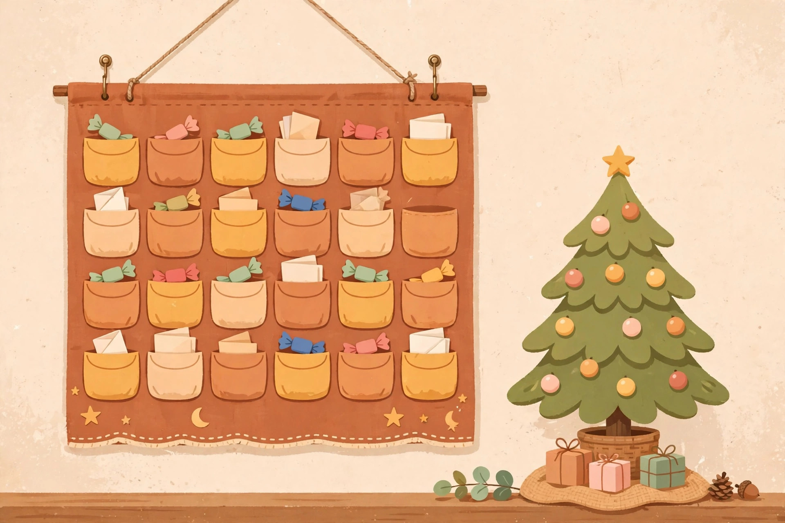

Advent calendars on a budget in Canada: cost per door and the claimed value trap

A calendar priced at $79 arrived in this season's shopping coverage carrying a claimed value of $260, and that gap is where advent calendar budgets go wrong. The $260 is the maker's arithmetic: every small product priced as if bought alone, at full price, by someone who wanted all of it. A buyer's arithmetic is different. Value only counts for the doors the recipient will actually use, and a calendar where half the contents sit in a drawer delivers half the claimed value at the full claimed price. Before any calendar earns a place in a Christmas budget, it has to pass two plain tests: what does one door cost, and what share of the box will genuinely get used?
Cost per door: the 2026 Canadian comparison
Dividing the price by the doors turns a glossy box into a daily rate, and daily rates can be compared. Prices below were checked November 11, 2026, in Canadian dollars unless the source itself reported otherwise.
| Calendar or benchmark | Price | Doors | Cost per door |
|---|---|---|---|
| LEGO City Advent Calendar 2026 (set 60510, 252 pieces, ages 5 and up) | CA$49.99 at LEGO Canada, as reported in the set guide | 24 | CA$2.08 |
| LEGO Star Wars Advent Calendar 2026 (set 75456, 293 pieces) | CA$62.99 at the official LEGO Shop Canada | 24 | CA$2.62 |
| Lindt TEDDY chocolate calendar | About CA$16 in 2026 roundup pricing | 24 | About CA$0.67 |
| Median calendar for kids, 2026 Advent Index for Canada | CA$49.20 median across 64 calendars | Mostly 24 | CA$2.23 median per door |
| Median calendar overall, 2026 Advent Index for Canada | CA$80.46 median across 149 calendars priced in Canada | Mostly 24 | CA$4.12 median per door across 148 |
| Median beauty calendar, 2026 Advent Index for Canada | CA$252.89 median across 49 calendars | Mostly 24 | CA$12.08 median per door |
| Complete homemade countdown, Edmonton budget guide | $5 to $25 total, depending on sweets added | 24 | About $0.21 to $1.04 |
Two facts in that table do the heavy lifting. First, the category decides the price more than the brand does: a median beauty calendar costs about five times a median kids calendar per door. Second, the homemade line is not a rounding error below the store bought lines, it is a different order of spending, and it is the only line in the table that gets cheaper in its second year. The Index, which priced 149 calendars in Canada for 2026, also records the cheapest doors in the country at CA$0.38 and CA$0.42, both chocolate calendars, which is a reminder that a low per door cost is easy to find when the contents are small and edible.
The use rate test, worked on the $79 calendar
The Sephora Collection calendar in the coverage makes a fair test case because its contents were actually listed: 24 surprises, of which 13 were full size products, five were travel sizes and six were accessories, priced at $79 with a stated value of $260. Four of the full size products bought separately were priced at $21, $17, $22 and $22, which totals $82, already more than the calendar. For a recipient who loves that brand, the calendar passes easily.
Now run the same box past a different recipient, using a labelled assumption. If she would use half the contents, the used value on the maker's own pricing is about $130, still ahead of $79. If she would use a quarter of it, the used value is about $65, and the calendar has quietly become a $79 purchase that delivers $65 of things she wanted, plus a drawer of things she did not. Nothing about the box changed. The use rate changed, and the use rate is a fact about the recipient, not about the product. Estimate it honestly before buying, door by door where the contents are listed, and treat unlisted contents as a lower use rate, not a hopeful one.
The December math: one year, three years, five years
A store bought calendar is an annual purchase. A reusable countdown is a purchase once, followed by refills. Using the Index median of CA$80.46 for the store bought route, and the Edmonton guide's figures for the reusable route:
| Route | Year one | Three Decembers | Five Decembers |
|---|---|---|---|
| Store bought calendar at the Canadian median, bought fresh each year | CA$80.46 | CA$241.38 | CA$402.30 |
| Reusable fabric pocket calendar ($12 to $30 once) refilled each year inside the guide's $5 to $25 complete calendar range | $17 to $55 in the widest reading | About $27 to $105 | About $37 to $155 |
| Numbered envelopes or a digital countdown, filled mostly with paper | $0 to $9 | $0 to $27 | $0 to $45 |
The reusable ranges are deliberately wide because fillers are a choice, not a fixed cost. The guide's own rule of thumb keeps them low: fillers over 40 cents each are more than needed, and 24 pockets at 40 cents each come to under $10. Paper fillers, jokes, activity cards, service coupons and clues, cost nothing at all, and a calendar filled half with paper and half with small bought treats lands near the bottom of its range every year. The store bought total, by contrast, is not a range. It is the median, repeated.
Set a per door cap and buy in November: the procedure
- Set the per door cap before looking at any box. A cap of CA$2.50 a door allows a $60 calendar and rules out most of the beauty shelf. A cap of CA$1 a door points to chocolate, food, or homemade. Write the cap into the Christmas budget as its own line, because calendars are bought in November and forgotten by the time the December food shop arrives.
- Price the doors, not the box. Divide the shelf price by the door count. Note that 12 and 25 door calendars exist alongside the usual 24, and a cheaper box with 12 doors can cost more per door than a 24 door box beside it.
- Run the use rate test. Where contents are listed, count the doors the recipient would use and divide by the total. Below half, the claimed value on the box is not a reason to buy, whatever multiple it advertises. The Index found contents valued at 2.2 times the price across the calendars it could itemise, and that multiple only matters for the doors that get used.
- Decide in November, and name a fallback. Five of the 149 calendars in the Index had already sold out when it was read on November 11, 2026, and the LEGO Star Wars calendar was out of stock on LEGO Canada when its page was crawled on November 8. A sold out first choice with no fallback becomes a December scramble at any price. Pick the substitute now, while it is still a choice.
- For a second or third child, price the household, not the calendar. Two median kids calendars at CA$49.20 each are CA$98.40 before any adult calendar joins the basket. One shared family countdown, or one calendar per child on alternating years, holds the line without cancelling the tradition.
What success looks like: every calendar in the house was bought in November at or under the per door cap, the December 1 doors open on time, and the January clear out contains no unopened doors and no box bought in a panic at a price nobody chose.
Traps: filler doors, shrinking boxes, and the value multiple
The value multiple is the maker's number. It prices every item at full retail, including the accessories and minis that carry a large share of many boxes. Six of the 24 surprises in the worked example above were accessories. Accessories are not worthless, but they should not be valued like full size products in a buying decision.
Boxes can shrink between years. The Index compared editions it could itemise in both seasons and found boxes returning with fewer items, or the same count with fewer full size products. Last year's good calendar is evidence, not proof, about this year's.
Duplicate gifting doubles the cost and halves the fun. Calendars are a popular grandparent gift. Two calendars for one child means two doors a day and a household cost nobody planned. One short conversation in November, who is buying the countdown this year, prevents the double spend entirely.
Shipping and timing are part of the price. A calendar that arrives on December 4 has lost four doors of its value on day one. A cheaper calendar that needs paid shipping to arrive on time can cost more than the shelf price of the one in a local store.
When a store bought calendar is genuinely worth it
Sometimes it is, and the tests above say when. A LEGO calendar at CA$2.08 to CA$2.62 a door, for a child who will build and keep every mini build, passes the use rate test at close to 100 percent, and its pieces stay in the toy box long after a chocolate calendar is a memory. A beauty calendar passes for the recipient who uses that brand daily and would have bought several of the full size products anyway. What never passes is the calendar bought on the strength of its claimed value alone, for a recipient whose tastes are a guess. That calendar is not a bargain at any multiple. It is a $79, or CA$80.46, or CA$252.89 lottery ticket with doors.
This is general information about personal budgeting, not financial advice. Everyone's situation is different. Prices were checked on November 11, 2026 and change through the season; check the current listing before buying.
, Penny Hughes, Money Writer. Saving Desk
Keep readingNext: Christmas gift cards on a budget in Canada →